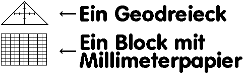

Previous
Next
TOC
Ein Geodreieck (Abbildung 2)

Kommen wir zur Arbeit mit dem Lötkolben. Also, ganz methodisch wollen
wir nun vorgehen, der Lötkolben hat zwei Enden (wie die Wurst) von
dem eines sehr beachtlich heiss werden kann und das andere Ende meist
einen Stecker hat, der zu einer Buchse passt, die aussieht als wäre
es die Nase von einem Wutzeferkelchen.
Die SCSI Geräte haben meist eine Stiftleiste von 3*2 Kontakten mit
der Bezeichnung A0, A1 und A2 wenn man dort einen Jumper (diese
ekligen kleinen Kunststoffdinger) draufsetzt tut sich meistens was
im Fluß der Elektronen beim Einschalten der Spannungsversorgung
(dann bringen wir mal den Hamster auf Trab) und die Elektronik merkt
daß das Gerät eine andere SCSI ID anzunehmen hat als die ID 0 (kein
Jumper gesteckt).
Man kann nun entweder die Litzen (bspw. von einem aufgetrennen
Flachbandkabel) an der Stiftleiste festlöten und man besorgt sich
vorher ein paar Buchsenleisten zum anlöten (altes Floppykabel oder
so schlachten) der Litze und draufstecken auf die Stiftleiste,
welches selbst für den unbedarften Lötkolbenartisten kein Grund ist
eine translazente Bewegung vollführen zu müssen. Nachdem dies nun
geglückt ist, naja ein Brandloch im Fußboden durch klecksendes Löt-
zinn muß man für den Fortschritt hinnehmen, wollen wir nun daran
gehen die Wechselschalter anzuschließen.
Fachgerecht tut man das indem man die Litzen auf eine Länge von 7
bis 11 Millimetern abisoliert (keine Zange? Was ne lausige Werkzeug-
kiste haben Sie denn!) und dann VDE gerecht Aderendhülsen drauf-
quetscht (natürlich gasdicht, also quadratische Quetschung).
Nachdem dies geschehen ist wollen wir nun die eben gequetschen Ader-
endhülsen in die Kontakte der Schalter einführen. Tja, die billigen
Schalter haben Schrauben, die teueren Klemmhebel (Technik? Ich hab
zwei linke Hände) welche sinngemäß natürlich auch etwas hinterhäl-
tiger sind im Umgang für einen ungeübten Zeitgenossen. Halt! Zuerst
müssen die Litzen durch die ausgestanzten Löcher der Hohlwandeinbau-
dosen geführt werden, sonst ist es Essig mit dem Anschluß. Nachdem
auch diese Hürde genommen ist schliessen wir die Schalter gemäß der
nachfolgenden Abbildung an.
weiterblättern
Kapitel SCSI ID Schalter aussen am Gehäuse montiert, Seite 2